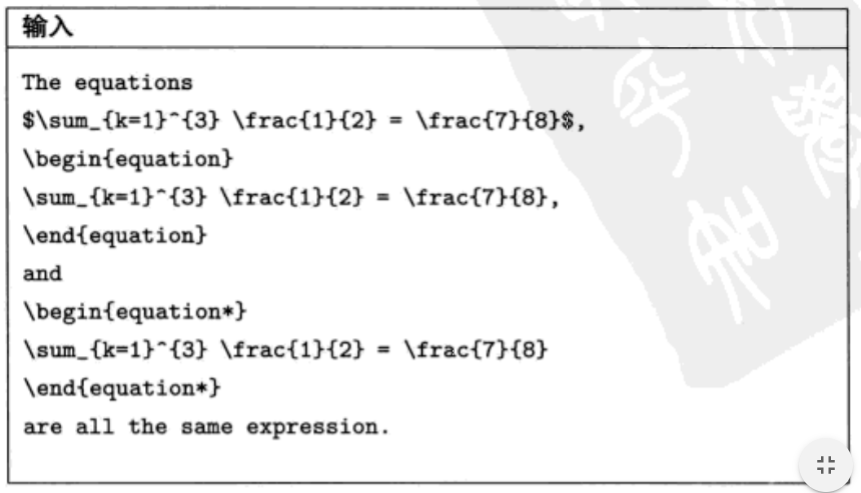
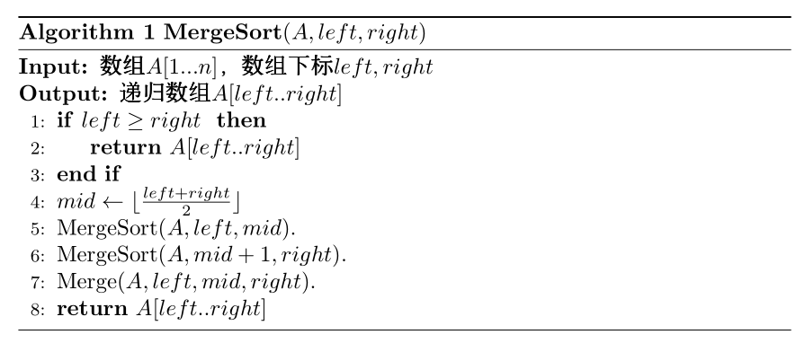

LaTeX基本用法总结
一、LaTeX源文件的结构
1 | %指定所写的文档的类别 |
美赛有一个专用的宏集是mcmthesis。
二、基本语法
1. 空白距离（换行、分段、分页、首行缩进）
LaTeX 将空格和制表符等空白字符视为相同的空白距离（space）。多个连续的空白字符等同为一个空白字符。在 LaTeX 文件中，每行开始的空白字符将被忽略，而单个的回车符被视为一空格。
LaTeX 使用空行来结束段落，两行文本中的空行标志上一段落的结束和新段落的开始。如同空格一样，多个空行所起的作用和一个空行的作用是相同的。
\\为段内强制换行。
换行命令
\：换行。
\[offset]：换行，并且与下一行的行间距为原来行间距+offset。
\newline：与\相同。
\linebreak：强制换行，与\newline的区别为\linebreak的当前行分散对齐。
分段命令
\par：分段。
分页命令
\newpage：分页命令。
\clearpage：和 \newpage 类似。我们在使用 CJK 环境时会加入 \clearpage 在环境末尾。
首行缩进
最朴实的方法是设置 \parindent 的长度：\setlength{\parindent}{长度}，如果想要首行缩进两个汉字距离，则\setlength{\parindent}{2em}。
如果在CJK环境当中，则可以在\begin{CJK}{GBK}{song}后面紧跟 \CJKindent 实现首行缩进。
默认第一段不首行缩进，如果想让第一段首行缩进，则可以使用 \usepackage{indentfirst}。
如果想让某一段不首行缩进，则可以在该段前加上 \noindent。
如果想让整篇文章都首行不缩进，则：\setlength{\parindent}{0pt}
注意：在 LaTeX 中，一个回车表示一个空格，两个回车表示一个分段。
2. 特殊字符与转义符
LaTeX有一些保留字符：
如果要在文本中显示这些字符，需要加上转义符“\”（由命令$\backslash$生成）。但是，反斜线"\“本身不能通过在前添加另外的反斜线得到，相反的，”\\"是一个用来断行的命令。
3. 注释
当 LaTeX 在处理源文件时，如果遇到一个百分号字符 %，那么 LaTeX 将忽略 % 后的该行文本，分行符以及下一行开始的空白字符。这样，我们就可以在源文件中写一些注释，而不会担心他们会出现在最后的排版结果中。
如果需要较长的注释，你可以使用 verbatim 宏集所提供的 comment 环境。当然，你需要在源文件的导言区里加上命令\usepackage{verbatim}。
注意这个方法不能使用在像数学环境等一些复杂的环境中。
4. 加粗和斜体
显示直立文本： \textup{文本}
意大利斜体： \textit{文本}
slanted斜体： \textsl{文本}
显示小体大写文本： \textsc{文本}
中等权重： \textmd{文本}
加粗命令： \textbf{文本}
默认值： \textnormal{文本}
5. 行间距
在引言中加入以下指令
1 | \usepackage[doublespacing]{setspace} |
就可以将论文按双倍行间距打印。
在引言中加入
1 | \renewcommand{\baselinestrech}{1.5} |
就可以将论文按1.5倍间距打印。
6. 项目符号
（1）符号列表
符号列表可用itemize环境生成。
例如：
（2）编号列表
编号列表可用enumerate实现，具体如下：
1 | \begin{enumerate}[控制符] |
begin旁的控制符用于设置项目标号的类型与格式，默认为（123）项目符号，要将项目符号设置为黑体则需写为[\bf 1.]，缩进可以在这里直接添加空格符，如[\quad\bf 1.]。
7. 脚注
论文中如果某个地方需要加脚注，指令是
1 | \footnote{footnote text} |
其中footnote text为实际的脚注内容。
例如：
注意：\footnote与前面的正文之间应没有空格。顺便指出，书写括号时应在括号外加空格，即在左括号之前及右括号之后加空格。
8. LaTeX命令
LaTeX命令是大小写敏感的，并有下面两种格式：
- 以一反斜线"\"开始，加上只包含字母字符命令名组成。命令名后的空格符、数字或其他非字母字符标志该命令的结束。
- 由一反斜线和一特殊字符组成。
LaTeX 忽略命令后面的空格。如果你希望在命令后面得到一空格，可以在命令后面加上 {} 和一个空格，或者加上一个特殊的空白距离命令。{} 将阻止 LaTeX 吞噬掉命令后面的空格。
许多命令需要一个参数（parameter）并用一对大括号（curlybraces）{ } 将其括起来置于命令名称的后面。也有一些命令支持用方括号（square brace）括起来的可选参数。下面的例子中使用了一些 LaTeX 命令，并将在以后对他们进行解释。
三、分级标题及目录
1. 分级标题
大标题在引言部分声明，并在正文部分使用maketitle显示。
文章的一级标题section{...}，它的二级标题为subsection{...}，同样，三级标题为subsubsection{...}……以此类推。
与之相似的，段落的小标题也用sub来标明结构。
2. 目录
添加目录只需在正文开始部分加上tableofcontents即可显示Contents。
四、数学公式
1. 数学模式
$...$是开启行内数学模式，用于和文本合在一起使用。
$$...$$和\[...\]是另起一行居中开启数学模式。
在数学模式下，所有字母的输出都是斜体字体，而且任何输入的空格都会在输出时被删去。任何数学表达式，甚至只是一个变量，都应该在数学模式下输入。
输出黑体数学符号的指令是\mathbf{math}，其中math是待输出为黑体的数学符号。
2. 公式中的空白字符
公式中的空格用\quad表示，如下表：
3. 大括号及多行公式
latex中的大括号及多行公式，经尝试，用array比较方便。
例：
1 | $$ |
在输出一组等式时，等式应在等号处对其，这可在align环境下实现。在每个等式的等号（或其他需要对其的符号）前加一个&符号，在每一行的结尾加上符号\\做结束。在这个环境下，每个等式都会显示各自的编号。如果等式不需要编号，应在其结尾处加上\nonumber这个指令。如果所有等式都不需要编号，则可以直接使用align*环境。
例如：

这个方法同样适用于不等式组。
用align环境也可以将拖式在等号处对齐。
例如：
这个方法同样使用于不等式拖式，以及混合的等式与不等式拖式。
4. 在equation环境下输入表达式
在equation环境下输入表达式，表达式能够被自动编号，方便引用。如果表达式不会被引用，则不要编号，不编号的表达式可以在equation*环境下输入。
例如：

假如在论文中需要引用某个表达式，则需要为这个表达式编号，做法是在这个表达式前插入指令\label{Label}，其中Label是作者任意选取的、作为标签的字符串。然后用指令\eqref{Label}就可引用这个表达式。
例如：
5. 矩阵
矩阵应在矩阵环境matrix下输入，逐行列出矩阵的元素，每行各元素之间用&符号隔开，每行的结尾用\\符号结束。
例如：
但是，矩阵环境matrix不会自动产生矩阵符号。常见的矩阵符号有三种，即圆括号、方括号及竖线，分别可用pmatrix、bmatrix及vmatrix环境自动生成。
例如：
6. 一些常用特殊符号
某些大写希腊字母与英文大写字母相同，如大写的及分别是及，latex没有为这些大写希腊字母提供相应指令，用英语的大写字母输入即可。
例如摄氏度℃可以用 C来表示。
函数名应该用斜体字，但对于sin及log等，应该用正体字。这些函数名在数学输入模式下均有相应的指令，通常是在反斜杠后输入函数名：
五、简单表格及三线表
1. 简单表格
一个简单的例子：
1 | \begin{table}[htbp] |
\hline是在下方加入一条横着的表格线。
tabular旁边的rlc分别代表右对齐、左对齐和居中格式。
caption和label是添加表名及其标号，表格的标题应在表格上方，而图片的标题应在图片下方。
2. 单元格的合并
四种指令简略说明 ：
-
\multirow{2}{*}{Multi-Row}
\multirow是跨列功能，第一个参数2，表示跨两列，第二个参数*，表示系统自动调整文 字，最后一个参数即是要填入的文字，跨列需注意的是，使用\multirow指令的那一列表 格，到了要撰写下一列表格时，被跨列直接留空，不可填字(填了之后就会知道为什么了)
-
\multicolumn{2}{c|}{Multi-Column}
\multicolumn是跨行功能，第一个参数2，表示跨两行，第二个参数c|，表示文字置中，并 在栏位右边画一条直线框，最后一个参数即是要填入的文字
-
\hline 表示画出一整条从左至右横线
-
\cline{2-3} 表示画出一条在第2栏位到第3栏位的横线段，其他栏位将不会有横线段
例子：
1 | \begin{tabular}{|c|c|c|c|c|} |
效果图：

3. 浮动格式
常用选项[htbp]是浮动格式：
『h』当前位置。将图形放置在正文文本中给出该图形环境的地方。如果本页所剩的页面不够，这一参数将不起作用。
『t』顶部。将图形放置在页面的顶部。
『b』底部。将图形放置在页面的底部。
『p』浮动页。将图形放置在一只允许有浮动对象的页面上。
一般使用[htb]这样的组合，只用[h]是没有用的。这样组合的意思就是latex会尽量满足排在前面的浮动格式，就是h-t-b这个顺序，让排版的效果尽量好。
!h 只是试图放在当前位置。如果页面剩下的部分放不下，还是会跑到下一页的。一般页言，用 [!h] 选项经常会出现不能正确放置的问题，所以常用 [ht]、[htbp] 等。
如果你确实需要把图片放在当前位置，不容改变，可以用float宏包的[H]选项。不过如果这样做，出现放不下的问题时需要手工调整。使用格式如下：
\usepackage{float}
\begin{figure}[H]
foo
\end{figure}
当h失效时，表格往往会放在新页面的中心。继续写入文字填充，表格会顺利嵌入文字。
4. 三线表
美赛论文格式中的三线表，举个例子：
1 | \begin{table}[!htbp] |
三线表中的线主要是通过\toprule、\midrule和\bottomrule生成。
六、插入图片
1. png等格式
或者用如下代码：
1 | \begin{figure}[htb] |
图片位置的设置和表格相同。
2. pdf格式
已经存在一个名为1.pdf的文件，将这个文件的某些页插入到新的pdf文件中，方法如下
1 | \documentclass[a4paper]{article} |
pdfpages宏包包含几个选项，一般用默认的即可。
includepdf命令也可以接受多个参数。
可以使用如下命令查看具体参数
texdoc pdfpages
3. 多图横排
七、参考文献
MCM解答论文必须列出所有引用过的文献资料。最简便的方式时使用thebibliography环境：
1 | \begin{thebibliography}{99} |
通过label作者可以使用\cite{label}在论文中引用这个参考文献。
例如：

八、伪代码
可以参考这个模板：
1 | \documentclass{article} |
效果如下：
